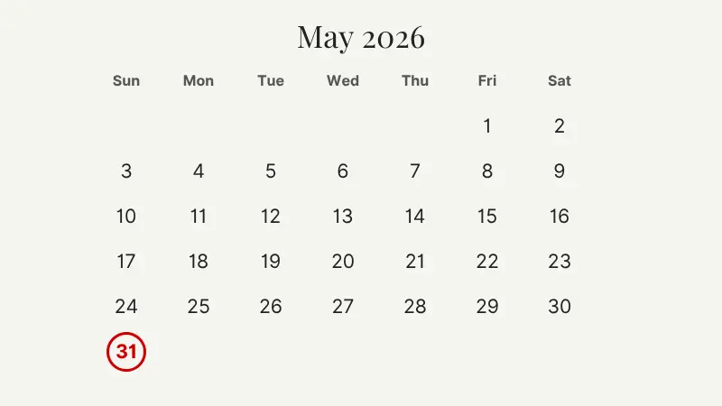

The Renters' Rights Act 2025: A Quick Guide for UK Landlords
The Renters' Rights Act 2025 received royal assent on 27 October 2025, and the first phase of changes came into force on 1 May 2026. Some sources call it the "Renters' Rights Act 2026" because that's when most of it took effect, but the legislation itself is the 2025 Act.
It's the biggest change to how landlords operate in England in over 30 years. Section 21 is gone. Fixed-term tenancies are gone. Rent increases now have a single statutory path. And there's a deadline at the end of this month that will catch a lot of landlords by surprise.
This page is a working guide, not legal advice. We've written it for student landlords, HMO operators, letting agents, and property managers who want to know what's changed and what to do this month. We've linked every claim to its source, for more information check out these pages. For information on your specific tenancies, talk to a qualified solicitor.
The 31 May 2026 Information Sheet deadline
Start here. This is the most urgent thing on your list.
If you have any tenancy that was in place before 1 May 2026, and it has a written record of terms, you must give every named tenant the official Renters' Rights Act Information Sheet 2026 by 31 May 2026, found on the GOV.UK site. The penalty for missing the deadline is a fine of up to £7,000.
There's a second consequence that hits even harder operationally. Until you've served the sheet correctly, you cannot serve a valid Section 8 notice under the new possession grounds. So if a tenant stops paying rent in June and you haven't served the sheet, you cannot lawfully start the possession process. You have to serve the sheet first, then serve notice. That's weeks of lost ground while a tenant is in arrears.

Who must receive the sheet?
Every named tenant on a tenancy that was in place before 1 May 2026 and has a written record of terms. Each tenant on a joint tenancy gets their own copy. Each tenant in an HMO who's on their own agreement gets their own copy. You do not need to give it to lodgers.
If you use a letting agent, the agent must also serve the sheet. Even if you've already done it yourself. Get written confirmation from your agent that they've served every tenant on every managed property. Don't assume.
How must it be served?
The rules on service are strict. Getting them wrong is almost the same as not serving the sheet at all.
You must give the exact PDF downloaded directly from GOV.UK. A summary you've typed up, a re-formatted version, or a screenshot won't count. You also can't send a link to the GOV.UK page. The actual PDF has to be attached or printed.
Three acceptable methods:
- Hand delivery at the property, ideally with the tenant signing a receipt.
- First-class post to the property address. Keep your proof of posting.
- Email, but only if the tenant has previously agreed in writing to accept documents by email. Keep the delivery confirmation.
Download the official sheet here: The Renters' Rights Act Information Sheet 2026 on GOV.UK.
What records do you need to keep?
For every tenant served, record the date, the method, and the proof of delivery. Store this for at least six years. If anyone ever challenges whether you served the sheet, this evidence is what protects you.
If you want help getting set up: contact us at HOMEi PM and we can talk you through how we're handling this in our pilot.
A second deadline for student landlords
This one is buried in the secondary legislation and a lot of student landlords miss it.
If you let to students and you rely on Ground 4A to recover possession at the end of an academic year (the ground that lets you get the property back to re-let to the next group of students), you must serve a specific written notice on your tenants to preserve the right to use that ground.
In most cases this notice has to be served by 31 May 2026 for this year's student tenancies. Same day as the Information Sheet deadline, completely separate obligation. Without it, you can temporarily lose access to Ground 4A for that tenancy, which means losing the structural mechanism that makes academic-year letting work.
If you're a student landlord and you haven't sorted this yet, take advice this week. It's a different form, served for a different reason, but the deadline is identical. Trowers & Hamlins' overview of the new forms covers the detail.
What's actually changed since 1 May 2026
These are the structural changes that now apply to every assured tenancy in England.
Section 21 is gone
You can no longer issue a Section 21 no-fault eviction notice. To recover possession, you have to use Section 8 and rely on one of the statutory grounds. If the tenant doesn't leave, you go to court and prove the ground applies. That's a higher bar than the old Section 21 route and it takes longer.
The most relevant grounds for student landlords are Ground 1 (you or family want to move in), Ground 1A (you intend to sell), and Ground 4A (the student-specific re-letting ground covered above). Mandatory grounds for rent arrears and anti-social behaviour also exist. The NRLA's possession grounds guidance sets out the full list.
Some grounds (like Ground 1A for sale) cannot be used in the first 12 months of a tenancy. Some require notice periods of four months. Plan accordingly.
Fixed-term tenancies are gone
Every existing Assured Shorthold Tenancy automatically converted to an Assured Periodic Tenancy on 1 May 2026. New tenancies created from that date can't have a fixed term. Every assured tenancy now rolls month to month with no end date built in.
You don't need to reissue tenancy agreements. The fixed-term clauses in old agreements are simply of no effect.
Tenants can leave with two months' notice from day one
This is a real change for student landlords. Under the old rules, a 12-month private student lets were structurally locked in unless there was a break clause. Now, a tenant can serve two months' notice at any point. They could move out three months into a 12-month period and you have no recourse to hold them, unless you can negotiate.
Voids are now more likely to happen mid-year, not just between academic years.
Rent increases use Section 13 and Form 4A only
If you want to increase rent on an existing tenancy, you now have one path and only one path.
- Use a Section 13 notice on the new prescribed form, Form 4A
- Give at least two months' written notice (double the old requirement)
- Wait at least 12 months from the start of the tenancy, or from the last increase, before raising rent again
- Propose a rent that's no higher than open market rent (the tenant can challenge it at the First-tier Tribunal)
Old rent review clauses in tenancy agreements are now null and void. Informal "we'll bump it up at renewal" arrangements are not enforceable. If the rent isn't going up through Section 13, it isn't going up.
Worth knowing: tribunals can no longer backdate rent increases to before the hearing, and they can't set a rent higher than the landlord's proposed figure. That changes the risk calculation for tenants. Challenging an increase is now much lower-risk for them, because the worst case is the rent stays the same and they've delayed it for the hearing window. Expect more challenges. Keep evidence of comparable local rents before you serve.
Shelter's Section 13 guidance is a good starting point. The NRLA's rent increase resources cover landlord-side detail.
Tenants can request to keep a pet
Blanket "no pets" clauses are out. A tenant can request to keep a pet and you can't refuse without a good reason. You can require pet damage insurance.
A few other things worth knowing
- Rental bidding above the advertised rent is banned. You have to advertise a specific figure and you can't accept higher offers.
- You can't demand more than one month's rent in advance once a tenancy has started.
- A new PRS Database and PRS Landlord Ombudsman will roll out from late 2026.
- Local councils now have stronger investigation and enforcement powers, including the ability to inspect properties and access third-party data. Some councils (Sheffield, Liverpool, Newcastle, Bristol, Brighton and Hove) have confirmed operational readiness for enforcement. Others haven't. Don't bank on council inaction.
What about new tenancies started after 1 May 2026?
The Information Sheet rule covers tenants you already had. For tenancies that started on or after 1 May 2026, the obligations are different.
You can't use the Information Sheet for these. Instead, you must give the tenant a Written Statement of Terms before they sign the tenancy agreement (or otherwise agree to the tenancy). The required content was published in government guidance on written information on 20 March 2026.
This isn't optional. Failing to give the required written information can also lead to a fine of up to £7,000.
If you're letting properties to new tenants this summer, build the Written Statement of Terms into your standard onboarding process now.
A practical checklist for the next two weeks
If you haven't started, here's the minimum to get through the deadline.
- Today. Download the Renters' Rights Act Information Sheet 2026 PDF from GOV.UK.
- This week. Pull together a list of every tenancy that was in place before 1 May 2026. For each, list every named tenant.
- This week. Decide how you're serving it: hand delivery, first-class post, or email (only if the tenant agreed in writing to email service).
- By 28 May. Serve every tenant. Build in time for postal delays.
- Same day. Record the date, method, and proof of service for each tenant. Put it somewhere you can find again.
- If you use an agent. Confirm in writing that they've also served every tenant on every property they manage.
- If you let to students. Take advice this week on whether you need to serve Ground 4A notice. Same deadline, different form.
- From June onwards. For any new tenancy you set up, include the Written Statement of Terms in your onboarding pack before the tenant signs.
Where to get guidance
This page is a working guide. For the official position, read these:
- GOV.UK Renters' Rights Act 2025 collection and the Information Sheet 2026 download
- NRLA Renters' Rights Act resources for landlords
- Shelter Tenant-facing rights guidance
- Citizens Advice Renting from a private landlord
- A solicitor For advice on your specific portfolio, contested issues, or anything you're not sure about
How HOMEi PM helps
Most of what the Act requires from landlords now is documentation. Did you serve the Information Sheet, when, to whom, by what method, with what proof? Did you serve Form 4A correctly? Can you produce the evidence trail if a tenant challenges or a council inspects?
We're building HOMEi PM because tracking all of this in spreadsheets and email threads stops working pretty quickly once you have more than a few properties. The platform keeps a single compliance record per tenancy, logs every notice served with its date and proof, and stores the documents in one place rather than scattered across folders and inboxes.
We're co-designing it now with letting agents in Sheffield and university accommodation providers. If you're a landlord with 5 or more properties and you want to be part of the pilot, drop us a line. We'd like to hear how you're handling the new procedures and what you wish a tool would do.
Frequently asked questions
When did the Renters' Rights Act come into force?
The Act received royal assent on 27 October 2025. Phase 1, covering the private rented sector, came into effect on 1 May 2026. Further phases including the PRS Database and PRS Landlord Ombudsman are rolling out from late 2026 onwards. The Act applies to the social rented sector from 2027.
What's the fine for missing the 31 May 2026 deadline?
Up to £7,000 per tenant on the GOV.UK guidance. You also lose the ability to use certain Section 8 possession grounds until you've served the Information Sheet correctly.
Can I email the Information Sheet to my tenants?
Only if they've previously agreed in writing to receive documents by email. Even then, you must attach the actual PDF. Sending a link to the GOV.UK page doesn't count.
Do I need to give the Information Sheet to lodgers?
No. The requirement applies to assured tenancies, not to lodgers living in your own home.
Does my letting agent need to send the sheet too?
Yes. If a letting agent manages the property, the agent must also serve the Information Sheet on every named tenant, even if you've already done so. Get written confirmation from your agent.
Can I still raise rent using the review clause in my tenancy agreement?
No. All rent review clauses became null and void on 1 May 2026. The only way to raise rent on an assured periodic tenancy is by serving a Section 13 notice on Form 4A, giving at least two months' written notice, and no more than once every 12 months.
What's the new Section 8 notice period?
It depends on the ground. Some grounds require four months' notice. Some (like serious rent arrears or anti-social behaviour) allow for shorter notice. The NRLA's possession grounds guidance covers each ground in detail.
Can I still recover the property at the end of an academic year for re-letting?
If you let to students and you serve the right Ground 4A notice by 31 May 2026, yes. Without that notice, you may not be able to use Ground 4A for the tenancy in question. Take advice on your specific situation.
Disclaimer
This page is general information only. It is not legal advice and does not create a solicitor-client relationship. The Renters' Rights Act is a complex piece of legislation with phased commencement, secondary legislation still being published, and case law that will develop over time. The application of the Act to your specific tenancies depends on circumstances we don't know.
Before taking any step that has legal or financial consequences, including serving the Information Sheet, serving a Ground 4A notice, serving a Section 13 rent increase, or starting possession proceedings, check the current position on GOV.UK and take advice from a qualified solicitor. HOMEi and the authors of this page cannot accept responsibility for action taken or not taken on the basis of this information.
Last updated: 14 May 2026.
Sources: GOV.UK, the National Residential Landlords Association, Shelter England, Citizens Advice, and published guidance from Bryan Cave Leighton Paisner, Trowers & Hamlins, Womble Bond Dickinson, and Penningtons Manches Cooper. Full citations available on request.